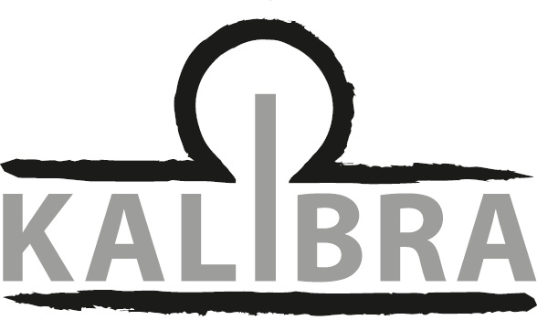

Poster Rack Management
KALIBRA has never had an easier time managing their poster rack business. This feature-rich tool allows for easy management of orders and requests, planning placement and pickup routes, and keeping track of inventory along the way.
Initial Situation/Problem statement
After working in the paper industry for decades, André Keller founded his own company KALIBRA in 2019. The company's core business is the printing and placing of posters on mobile racks. They can be bought or rented, and the company offers additional services like printing posters and placing the racks in the desired area. The once one-man company has grown over the years, and can now tackle large-scale operations with the help of employees, freelancers, and volunteers.
However, almost all of the planning is still done by André himself. He uses a plethora of different applications to organize orders, assign work, and make sure all racks are accounted for. In the past, this segregated way of managing data has lead to confusion, inconsistencies and even data loss, causing KALIBRA to waste precious time by doing work twice.
Project Goal
The goal of Poster Rack Management is to digitize KALIBRA's core processes into one centralized tool. This directly combats the risks of data inconsistencies across separate systems for a more secure and organized workflow. KALIBRA will be able to view, manage, and respond to orders and requests, plan driving routes for placing down and picking up poster racks, keeping track of their inventory, as well as allowing other people than André to tap into workflows in case of absences; all in the same place.
Planning placements

Employees working for KALIBRA can easily plan where to place down racks for an order simply by clicking on an interactive map.
Order lifecycle

Orders traverse the KALIBRA's established lifecycle, and their respective customers can receive email updates along the way.
Request form

Interested customers can swiftly submit orders via the step-by-step order form, ensuring all required information is submitted.
Developed Solution and its benefit
The implemented solution on app.kalibra.ch consists of a feature-rich web application, tailored perfectly to match KALIBRA's workflows. By streamlining the lifecycle of orders, both employees and customers benefit from a simpler way of working and more consistent progress tracking. It is also trivial to hand over operations in case of absences.
- Planning routes: KALIBRA can easily plan their routes for placing down and picking up up racks using an interactive map. Making sure a rack is taken care of only takes a single click. Already planned and placed racks are displayed on the map, making it trivial to optimize planning across orders.
- Managing orders: Customers can now submit their requests via an organized, flexible form, rather than just a single text box. Once an order is received, KALIBRA can easily view and move them along their lifecycle from start to finish.
- Streamlined communication: Any time an order moves along in its lifecycle, KALIBRA can automatically send out templated emails informing their customers about the changes. Should there ever be any situation not covered by the many templates, a custom message can be sent from within the web app. This keeps the customers informed about their orders, boosting confidence and trust in KALIBRA.
- Organized preparation: To keep track of preparatory steps, todos can be added to each order. Todos can be reordered, removed, and are accompanied by an optional due date, thus making sure that nothing is skipped.
- Keeping inventory: KALIBRA stores their racks in several locations. By having an overview of all the racks in said locations, they can easily check whether they have the capacity for any given order.
- Delegating work: André no longer needs to stay on top of everything when on vacation or feeling unwell. Poster Rack Management allows multiple people to access the same information at various permission levels, so anyone can do any work as instructed and configured.
All of this makes for a more robust and controlled way of working at KALIBRA. Business practices are carried out in a more transparent manner and will allow for better collaboration.
Testemonial
«Some order steps that were previously executed only in my head can now be properly documented with this new tool. This results in workflows that are no longer dependent on any one person, ensuring that orders can be fulfilled even if I happen to be unavailable. This increased the involvement of employees and provides the opportunity to expand the overall volume of business.»
André Keller, owner of KALIBRA
Key terms
- UI DesignFigma
- Programming languagesTypeScript, Java
- Frontend StackAngular, RxJS, Leaflet, Angular Material, Bootstrap
- Backend StackSpring Boot, JPA with Hibernate, OpenAPI
- DatabasePostgreSQL
Client

KALIBRA GmbH
Hausmattenstrasse 4
5113 Holderbank AG
+41 56 210 10 00
mail@kalibra.ch
www.kalibra.ch
Team
Team
Dominik Krebs
Patrick Stettler
Marcel Pfeuti
Janik Baumann
Giannin Brandenberger
Mladen Branković
Luca Märki
Coach
Nitish Patkar